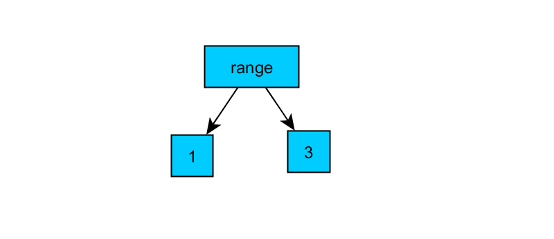
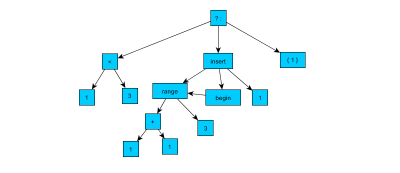
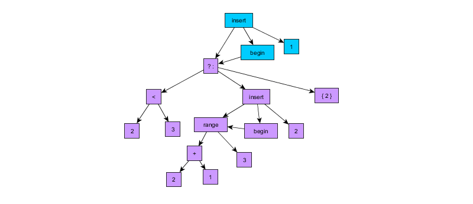
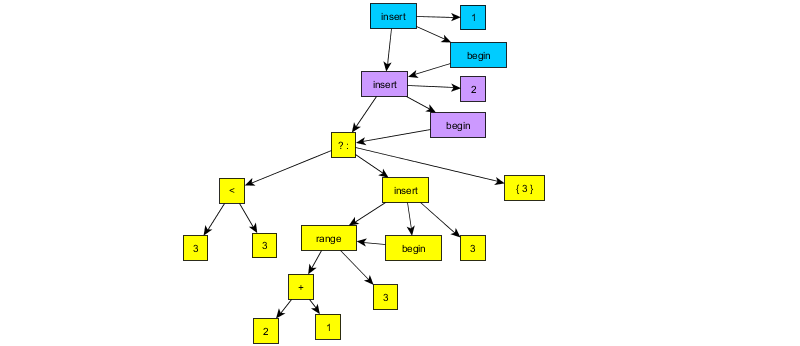
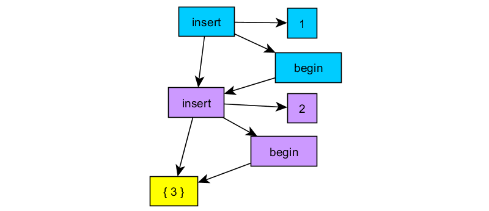
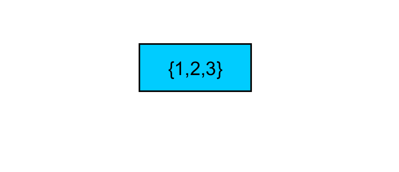

Programming Tools
1 Representing Data
Programming is the process of breaking down problems into pieces that a computer can understand. The most challenging aspect of this process is changing the way we thinking about problems and, on a more philosophical note, the world around us. Computers have no concept of what a tree is or how to render a webpage until we as the programmers define what these terms mean. In many ways, this is similar to translating from your native language into another, more formal, one.
At its most basic level, programming can be summed up in two questions: how can we represent the problem's nouns and how can we represent the problem's verbs? Nouns tell us what we're working with. Verbs tell us what to do with the nouns or how to make them.
More generally, there are quite a few useful similarities between langauge and programming:
| language | programming |
|---|---|
| noun | data |
| verb | function |
| adverb | higher order function |
| pronoun | object |
| adjective | interface |
1.1 Constants
In programming nouns can take several forms depending on how much you know about the noun beforehand. If a value already known ahead of time, it can be represented with a constant. Constants are specific values like the number 5 or the word "Hello". These are directly stated as part of the program and are the most constrained form of a noun.
Most programming languages, including C++, categorize different values in the following way:
| real world | C++ type |
|---|---|
| numbers | int |
| decimals | float |
| letters | char |
| text/words | string |
Each of these different categories of values are called a Type. Types help tell the program what can and cannot be done with certain values. It wouldn't make sense for a person to try and send a text message with a bicycle and we'd like the same to be true in our programs as well. The four types listed above are not the only types we can work with while programming, but they are some the most primitive. All other types are combinations of these four types.
The first of these types int represents positive and negative whole numbers and can be expressed in a program like this:
0 -1 4 239458459823459246 -123493952395923592359
int values are great for counting things or representing amounts. A few examples of real world int values are: ages, years, stars in a movie review, students in a classroom, etc.
The next category of values are float values. These values represent decimal numbers and can be expressed like this:
0.0 .05 -1.214253235 12435.234
float values are great for representing percentages, positions, fractions, etc. Concepts like height, discounts, and money can be representing with this type.
Numbers are not the only values which can be represented on a computer. Any symbol on your keyboard can be represented using the char type. Typically, char values are used to represent letters and single digits. Any symbol surrounded by single quotes is a char. For example:
'a' '9' '$' '>' ':'
By grouping char values together we can make a string. The string type allows us to represent any amount of text within our programs. Names, addresses, dates, etc. are typically represented using this type. You can express a string by wrapping the text in double quotes like so:
"Hello there fellow humans!" "cost: 50, tax:96%, discount:0.5" "<(-.-)> (@_o)!!!"
Strings have a special value to represent no text, otherwise known as the "empty string" or "". There is no space between the quotes and is the same as an empty chat dialogue box or an empty searchbar.
Programs are essentially text files which people (mostly you) will have to read. In order to make our programs as easy to understand for humans, it is often useful to give better names for the values we want to use so they better capture the real world noun they are meant to represent. For example, instead of just saying int, one could say Age.
In C++, you can tell the computer to interpet a word as a type via the using keyword. The term keyword in programming refers to words that have predefined meanings within the given programming language. These keywords cannot be redefiend by the user.
Here we can see examples of using usage:
using MarbleCount = int; using StudentName = string; using Discount = float; using PlayerSymbol = char; ...
There are five parts to defining our own name for a type. The first part is the using keyword which tells the program that we intend to define a new name. The second part is the name we want to use. The third part is the \(=\) sign. The fourth is the existing type which the name to the left of the \(=\) symbol will actually mean. The final bit of syntax for this kind of statement is the ;. Any kind of statement or step in a program will end in a semi-colon.
Note that any names you add into your program cannot have any spaces or strange symbols. The rules for new names are as follows:
- the name must begin with a letter
- the name can only consist of letters, numbers, or the
_symbol
Although, these primitive types can represent quite a bit on their own, they cannot represent everything we might want to program. In order to represent more complicated nouns like people or places, we'll need a way to group these values together into a new type.
// definition of a struct struct Person { int age; double height; string first_name; char middle_initial; string last_name; bool employed; }; // creating a struct value Person {30, 5.11, "Captain", 'J', "Sparrow", true}
In the first section of the above code we see a new type of statement. Here the code defines a struct or a collection of values. The syntax for struct definitions are as folows:
- the
structkeyword - the name of the new type (typically in upper case).
- the
{symbol - the different values in the
structwhich follow the patterntypethennameended with a; - close the
{with the}symbol - semi-colon
The names given to the values within the struct are there so you can access the individual parts of a struct later on.
For example, if we assumed that the name \(p\) referred to a Person value, we could access its members like this:
p.age p.height p.first_name
The dot expressions can be read as p's age or p's first_name. While the dot value .age could potentially refer to the age of any Person, it has to be paired with a particular Person in order to be used.
The second part of the code above defines a constant Person value. Constructing a value of any struct can be done by giving a value for each of the different members of the type. Note that the order is important, it is the same as they are defined. First the age, which is an int, then the hieght, which is a double, etc. The {} symbols are generally associated with groups of values and are used in both definitions and expressions.
1.2 Functions
When a value isn't known ahead of time we can express it as a function. Functions are both a less specific version of a constant as well as a way to represent verbs.
In maths, functions represent "mappings" from some domain into some range/co-domain. For our purposes we can think of the "domain" as the types of values that are needed to create the value we want (the co-domain). For example, addition can be thought of as a function that takes two int values and creates another int value.
\[addition(x,y) = x + y\]
In order to translate this definition into C++ we need to follow these steps:
- determine what
typeof value you want to construct later on - come up with some name for the process of making the value (the function)
- determine what other values might be needed and their
type - write out an expression that, given all the inputs, will construct the value you want
int addition(int x, int y) { return x + y; }
The above code is the implementation to the earlier math expression. The first part of the definition is the type of the value we'll construct later once we know what the inputs are. The second part is the name of the function so we can refer to our definition later. The third part is a comma seperated list of all the input values needed to make our result.
These parts so far make up the "signature" of the function. This indicates all the information needed to use the function we've defined. It is a good idea first design the signature before trying to come up with the expression for the next part, the implementation.
The implementation of a function is the part surrounded by the curly braces. This section of the function defines the steps needed to construct the result. When the value is constructed we indicate this by using a return statement.
int plus_five(int x) { return x + 5; } plus_five(10)
The above function specifices a way to construct an int value from another int. Once the value \(x\) is known, plus_five will construct another int by adding five to \(x\).
The second part uses the defined function to construct the value 15. This is refered to as "calling" the function. Note that all which is needed to use the function is its name and a comma seperated list of the inputs.
addition(1,2)
The above uses our previous defition of addition to construct 3. The useful thing about functions is that they can work with data that doesn't exist until the program actual runs.
Functions are needed when certain values aren't known ahead of time. These unknown values become the inputs to the functions and the process of constructing these values are how verbs are represented in programming. All programs do is construct new values out of other values. For example, games construct images at 60 fps from values like player health, position, camera angles, etc. Many tasks within programming are similar and by defining more abstract expressions with functions we can end up reusing those definitions.
1.3 templates
The final level of abstraction in C++ can be achieved with templates. These kinds of values are needed when nothing is known about a value except that you need a value. This allows for the definition of very abstract concepts like a pair.
template <typename A, typename B> struct Pair { A first; B second; }; template<typename T> T add_pair(Pair<T> p) { return p.first + p.second; }
template values can be thought of as functions which take a type and return other types. In the above code we define a struct Pair which can hold a pair of any two types.
There are three parts to a template definition:
- the keyword
template - a comma seperated list of
types, with each of the types preceeded by the keywordtypename - the definition that uses the input types
Templates are often used to define either very abstract concepts or used to make tools for programmers. Most programming languages will have a collection of templated functions and types which save the programmer time by defining concepts beforehand. For example, the string type in C++ is actually provided by a library.
1.4 Summary
The first part of programming is determing how to break down a problem and then deciding how to represent the pieces. Any values which are known ahead of time can be defined with a constant. Any values which can't be constructed until other values are known (possibly when the program is run) can be defined by functions. Any values for which not even the type is known ahead of time can be defined by templates.
2 Math Tools
2.1 basic math functions
| function | meaning |
|---|---|
| + | addition |
| - | subtraction |
* |
multiplication |
/ |
division |
| % | modulus |
- note that the word "operator" might show up in the place of function at some point.
- an operator is just a function with a funny symbol instead of a word for a name.
2.2 char math
- remember that characters are represented as numbers in an ascii table
- every value of
charis a number that corresponds to a symbol - because
charvalues are secretly numbers, you can actually do math with them
// This converts a character letter (between 'A-Z') to its lower case // version by adding the difference between 'a' and 'A' since the number // for 'a' is greater than for 'A' char lower_case(char c) { return c + ('a' - 'A'); }
2.3 string math
- strings can be combined using
+
// combine("pop", "tart") would return "poptart" string combine(string first, string second) { return first + second; }
3 String Tools
3.1 find length of string
get the length
int get_length(string s) { return s.length(); }
3.2 accessing parts of a string
3.2.1 front
gets the first character
// get_first("hello") returns 'h' char get_first(string s) { return s.front(); }
3.2.2 back
gets the last character
// get_last("hello") returns 'o' char get_last(string s) { return s.back(); }
3.2.3 at
gets the character at a certain spot
// get_at(1, "hello") returns 'e' // get_at(0, "hello") = get_front("hello") // get_at(4, "hello") = get_last("hello") char get_at(int spot, string s) { return s.at(spot); }
3.2.4 substr
gets the characters between some starting and ending spot
// get_substr(1,4, "hello") returns "ello" string get_substr(int begin, int end, string s) { return s.substr(begin, end); }
3.3 modifying a string
3.3.1 insert
adds a character(s) into a string at a certain spot
// insert_word("hello", 4, " world") returns "hello world" // insert_word(" really", 1, "I love cookies") returns "I really love cookies" string insert_word(string word, int at, string s) { return s.insert(at, word); }
3.3.2 erase
removes a character(s) at a certain spot
// remove_word(2, 6, "I don't love cookies") returns "I love cookies" string remove_word(int at, int length, string s) { return s.erase(at, length); }
3.4 searching a string
finds first occurence of substring
// find_cake("Hello cake") returns 6 // find_cake("hello friendo") returns -1 int find_cake(string s) { return s.find("cake"); }
4 Choice and Decision Tools
4.1 how to make a decision?
- empty the bag if it is full
- take the cake out of the oven when the timer is done
- bring me the biggest pumpkin
- does this test belong to me?
- is this my car?
4.1.1 a new type!
bool = true | false
4.1.2 some new combinators!
| meaning | operator |
|---|---|
| less than | < |
| greater than | > |
| equal to | == |
| less than or equal to | <= |
| greater than or equal to | >= |
4.1.3 useful logic functions
not = ! or = || and = &&
4.2 using comparisons to change result of function
4.2.1 the ternary operator
// breaking up the problem doesn't help int add_if_even_and_divisible_by_three(int input){ return (even(input) && divisible_by_three(input)) ? input + 5 : input; }
4.2.2 reading the ternary operator
condition ? value1 : value2
- evaluate the condition before
? - if it evaluates to true, then value1 is the answer
- otherwise value2 is the answer
5 Variables and Scope
We need to understand how C++ goes about representing the values which are passed back and forth between functions.
5.1 A Name and a Box
In mathematics, a variable is simply a name for a value which has not been given yet.
Examples:
- area of circle: \[area(r) = \pi r^2\]
- area of triangle: \[area(b,h) = \frac{1}{2} bh\]
- line formula: \[y(m,x,b) = mx + b\]
In all of these examples, the names \(x\), \(r\), \(b\), etc. are all placeholders which are swapped out when the values are eventually known. Functions are simply names for expressions and can be swapped out with their definitions. While this method is simple for humans to understand and work with, it is inefficent for a computer to perfectly emulate.
On a computer, a variable is name which refers to a box holding a value of some type.
int x = 5;
There are three parts to defining a variable to work with in C++:
- The type of the variables (int, bool, float, string, etc.)
- The name of the variable
- The value in the box (must match the type)
5.2 The auto Keyword
Writing out the types can be annoying (sometimes impossible). An alternative to explicitly writing out the type for a variable is to use the keyword auto in place of the actual type.
struct MySuperLongAnnoyingNameForMyType { int thing1; int thing2; }; MySuperLongAnnoyingNameForMyType add_numbers(...) { ... } int main() { auto x = 5; auto word = true; auto result = add_numbers(...); ... }
In the above example, the function add_numbers returns a MySuperLongAnnoyingNameForMyType. Instead of having to write out the type for the variable, auto will tell C++ to look at the return type of add_numbers to figure out what the type of result is.
5.3 Assignment
Unlike in maths, once the box has been filled with a value it can be changed as many times as we want.
int x = 5; cout << "before: " << x << "\n"; x = 6; cout << "after: " << x << "\n";
5.4 Variables can be Assigned to Eachother
Because the variable is a name which refers to a value, these names can be used anywhere a value of that type would have been accepted. For example, if we wanted to fill one variable's box with a value, we could use the value of another variable to fill it.
int x = 5; int y = 10; x = y; cout << x << " " << y << "\n";
Notice that after the assignment there remains two separate boxes. With normal variables, assignment does not result in two names refering to the same box. The contents of one box is copied into the other box. If \(y\) is assigned to \(x\), later changing \(x\) does not affect \(y\).
5.5 Function Evaluation and Scope
int line(int m, int x, int b){ return (m * x) + b; } int main() { int m = 5; int x = 4; int b = 3; cout << line(m,x,b); return 0; }
When the program is evaluated it starts from the first line of main() and runs the program, line by line, until it reaches the return 0;. Every line with a variable creates a new box which the name refers to. When a function is called, we jump to the first line of that function (in this case line()). New variables are created for each of the inputs and filled with the values passed in when the function was called.
What happens if the inputs to a function have the same names as existing variables? Fortunately, this isn't a problem because functions create their own scope.
A scope can be thought of as a room. Imagine a school with multiple people who have the same name. If all of the students were looking down and they heard their name called, they would be confused as to whether it was them being called on. However, this isn't a problem if none of them are in the same room.
This is how the problem of many variables with the same name is solved. A name can only be used by one variable at a time in each scope. So long as variables are in different scopes, their names do not conflict.
5.6 References
While the default for variables is for a name to refer to its own unique box, it is possible for a name to refer to an existing box.
int line(int m, int& x, int b){ return (m * x) + b; } int main() { int m = 5; int x = 4; int b = 3; cout << line(m,x,b); return 0; }

This means that what ever operations are done to the name \(x\) within line will also affect the box of the \(x\) inside of main.
int line(int m, int& x, int& b){ return (m * x) + b; } int main() { int m = 5; int x = 4; int b = 3; cout << line(m,b,b); return 0; }
If the same box is passed in for both references, the names \(x\) and \(b\) will refer to the same box.
5.7 Pointers
While references can refer to existing boxes, pointers are special variables which have a box that holds references to other values.
int main() { int x = 5; int* y = &x; return 0; }
Pointers cannot be used as normal variables unless they are dereferenced.
int add(int a, int b) { return a + b; } int main() { int x = 5; int* y = &x; cout << add(x, (*y)); return 0; }
Dereferencing a pointer tells C++ to "follow" the reference to the box it's pointing at. This is what happens with normal variables and references, except neither can actually change which box they are refering to.
int add(int a, int b) { return a + b; } int main() { int x = 5; int* y = &x; int z = 10; y = &z; cout << add(x, (*y)); return 0; }
Pointers are needed when unknown amounts of data are created at runtime. For example, if a file is loaded into memory, the program can't know ahead of time how the contents are. If the size cannot be known ahead of time, then it is impossible to use a normal variable for it. To get around this, the memory is reserved when the file is loaded and the result is a pointer to this data.
When initially created, pointers will refer to a speciall value called Null. If a pointer is set to Null it means it does not currently refer to any existing value. If you attempt to dereference a null pointer it will cause the program to crash.
5.8 Side effects
References and pointers are dangerous to work with given that they can manipulate values which are outside of the scope they exist in. Misuse of these tools can lead to problems that are difficult to track down if you can even correctly detect where the problem is happening. Pointers especially have a tendency to blow up some time after they are actually created due to the Null value.
| variable type | symbol | example | when to use |
|---|---|---|---|
| value | (none) | int | most of the time, it is the safest option |
| reference | & | int& | with big values that are too expensive to be copied |
| pointers | * | int* | when working with data whose size is unknown beforehand |
In modern practice, there are several alternatives to using "raw" pointers. While they will not be discussed here, you can find more information about "smart pointers" at these links:
5.9 When to use Variables?
Variables can come in handy when writing functions that use the same result in more than one place.
Lets write a function that transforms names from first, middle, then last to last, first middle with a comma after the last name.
"Robert Milton Jones" -> "Jones, Robert Milton" "Tom Marvolo Riddle" -> "Riddle, Tom Marvolo" "John Jacob Jingleheimer" -> "Jingleheimer, Jon Jacob"
string name_swap(string name){ return (name.substr(name.find(' ') + 1, name.length() - 1)) .substr( (name.substr(name.find(' ') + 1, name.length()-1) .find(' ') + 1), (name.substr(name.find(' ') + 1, name.length()-1)) .length() - 1) + ", " + (name.substr(0, name.find(' ') - 1)) + " " + (name.substr(name.find(' ') + 1, name.length() - 1)) .substr( 0, ((name.substr(name.find(' ') + 1, name.length() - 1)) .find(' ') - 1)) ; }
if we follow the normal algorithm, we get this disgusting mess
string first_name(string name) { return name.substr(0, name.find(' ') - 1); } string middle_name(string name) { return (name.substr(name.find(' ') + 1, name.length() - 1)) .substr( 0, ((name.substr(name.find(' ') + 1, name.length() - 1)) .find(' ') - 1; } string last_name(string name) { return (name.substr(name.find(' ') + 1, name.length() - 1)) .substr( (name.substr(name.find(' ') + 1, name.length()-1) .find(' ') + 1), (name.substr(name.find(' ') + 1, name.length()-1)) .length() - 1); } string name_swap(string name){ return last_name(name) + ", " + first_name(name) + " " + middle_name(name); }
we could try making seperate functions to get each name, but that just moves the problem
string first_name(string name) { return name.substr(0, name.find(' ') - 1); } string middle_last(string name) { return name.substr(name.find(' ') + 1, name.length() - 1); } string middle_name(string name) { return middle_last(name) .substr(0, middle_last(name).find(' ') - 1); } string last_name(string name) { return middle_last(name).substr( middle_last(name).find(' ') + 1, middle_last(name).length() - 1); } string name_swap(string name){ return last_name(name) + ", " + first_name(name) + " " + middle_name(name); }
If you see the same pattern more than twice, you should make a function, however it's a bit annoying to have to write out new functions in C++'s bulky syntax all the time. If these functions will never be used again, then it would be preferable to just define variables within the function to hold onto the intermediate results.
string name_swap(string name){ string first_name = name.substr(0, name.find(' ') - 1); string middle_last = name.substr(name.find(' ') + 1, name.length() - 1); string middle_name = middle_last.substr(0, middle_last.find(' ') - 1); string last_name = middle_last.substr( middle_last.find(' ') + 1, middle_last.length() - 1); return last_name + ", " + first_name + " " + middle_name; }
This is safe so long as we don't change what the variables hold and if the order in which the results are used doesn't matter.
5.10 When to not use Variables
string division(int x, int y){ int result = x / y; return y == 0 ? "fail!" : to_string(result); }
In this case it is unsafe to store the result in a variable because it is calculated before the safety check! Remember that programs execute statements in order, so if \(y\) happens to be zero, it will attempt the division and crash the program before the check can catch it.
6 Functions as Values
6.1 C++ function variables
auto add = [] (int x, int y) { return x + y; };
auto add = [] (int x, int y) { return x + y; }; int x = add(5,5);
6.2 lambda capture
int x = 10; auto addX = [x](int y) { return x + y; };
int x = 10; auto addX = [&x](int y) { return x + y; };
6.2.1 Capture Practice 1
int x = 10; int y = 5; int z = 22; auto f = [???]() { return x + y + z; };
What needs to be captured?
int x = 10; int y = 5; int z = 22; auto f = [x,y,z]() { return x + y + z; };
6.2.2 Capture Practice 2
int x = 10; int y = 5; int z = 22; auto f = [???](int a) { return a + y + z; };
What needs to be captured?
int x = 10; int y = 5; int z = 22; auto f = [y,z](int a) { return a + y + z; };
6.2.3 Capture Practice 3
int x = 10; int y = 5; int z = 22; auto f = [???](int a, int y) { return a + y + z; };
What needs to be captured?
int x = 10; int y = 5; int z = 22; auto f = [z](int a, int y) { return a + y + z; };
6.3 passing functions to other functions
#include <functional> // the functional header is needed for the function type int do_math(function<int(int,int)> op, const int& x, const int& y) { return op(x,y); } int add(int x, int y) { return x + y; }; do_math(add, 7, 3); // 10
6.4 what are the uses of lambdas?
6.4.1 less repetition in code
using Tag = string; using HP = int; struct Action { ... }; struct Unit { ... }; struct AiUnit { Tag id; HP hp; Unit* target; function<Action(Unit*, HP)> behavior; };
The AiUnit can have its individual behavior swapped out by simply assigning a new function
7 Collections of Fixed Size
in C++, arrays represent fixed length collections
char letters[5] = {'a','b','c','d','e'};
Previously, if we wanted to talk about a collecction, we'd have to make a big struct
using Age = int; using Name = string; struct Person { Age age; Name name; }; using TeamName = string; struct Team { TeamName name; Person coach; Person quater_back; Person wide_reciever; ... };
Now we can represent collections with arrays
using Age = int; using Name = string; struct Person { Age age; Name name; }; using TeamName = string; struct Team { TeamName name; Person captain; // instead of having a value for each player // use an array to represent the team Person players[11]; };
7.1 accessing array elements
template <typename T> T first_of_five(T stuff[5]) { return stuff[0]; } template <typename T> T second_of_five(T stuff[5]) { return stuff[1]; } int numbers[5] = { 1,2,3,4,5 }; first_of_five(numbers); // 1 int truths[5] = { true, false, true, true, false }; second_of_five(truths); // false
- arrays start from 0
- the index represents spaces from the start

7.2 modifying array elements
char letters[5] = {'a', 'b', 'c', 'd', 'e'}; int i = 0; int j = 3; letters[i] = letters[j];
7.3 warning
- arrays are always passed by reference
- there is no way to return a raw array
- cannot use == to compare arrays
7.4 Better array type
#include <array> std::array<int, 5> numbers = { 1,2,3,4,5 };
- Can return std::array from functions
- Has lots of nice functions like .front, .back, and works with comparison operations
But how can we use all of the elements of a vector?
8 Recursion
There are five steps for recursion:
- Find the "do nothing" input
- Find the "do nothing" step
- Break off the front
- Make the problem smaller
- Combine results
8.1 Finding the do-nothing step and input
Although we're solving problems with steps that repeat, eventually there is a point where the problem is solved and no more work needs to be done.
Consider the problem of adding up all the numbers from some integer 10 to 1. When written out this is what we want to happen:
int sum_10_to_1(){ return 10 + 9 + 8 + 7 + 6 + 5 + 4 + 3 + 2 + 1; }
If we zoom in on the front of the problem we see something like this:
10 + ...
The integer 10 plus some other stuff. We are looking for a place where more work is needed so we'll have to go to the other end of the expression:
... 1
Here we have nothing more to add and conveniently we've also found our do-nothing input. If the problem was add all the numbers from 1 to 1, then the result would just be 1. Nothing happens. So how can we simulate doing nothing with additon? Well, adding 0 to any number does nothing, so in this case plus 0 is our do-nothing step.
So how can we generalize this to adding up all the numbers from some integer n to 1? Well when written out we see something similar to what we had last time:
int sum(int n) { return n + (n-1) + (n-2) + ... + 1; }
Only, in this case, we don't know exactly how many terms we need to add up. That being said, we can see our do-nothing step has not changed. When we are uncertain of how many steps we need to actually repeat we'll have to come up with some kind of check to tell when we've reached the do-nothing step.
In this case our check could be:
n == 1
Common do-nothing inputs are:
| type | input | check |
|---|---|---|
| numbers | 0 or 1 | == 0 |
| string | "" | == "" |
| vector | {} | .empty() |
Once we've established when no more work has to be done and what the result should be in that case, we can move on to actually doing some of the work.
8.2 Breaking off the front
Because we cannot always know ahead of time how much work has to be done, like in the case of adding all the numbers from n to 1, we need to find some way of breaking off a piece of the problem so we only need to program one step at a time.
Let's say we wanted to take some string, say "hello" and make it all captials, "HELLO". This problem as it is cannot be solved using the tools we know so far, however we do know how to make a char upper case using toupper().
In this case, breaking off the front can be taken literally, grab the first character of the string using .front().
string("hello").front()
Now that we have a character to work with, we can simply apply toupper() to get the first value of our desired result 'H'.
toupper(string("hello").front())
This can easily be generalized to any string by replace the literal "hello" with a variable, lets say s:
toupper(s.front())
If we return to the problem of adding numbers from n to 1 we can see a similar process is used, although it is not as obvious. In this case we aren't literally breaking off the front of the number, instead we are breaking off the front of the expression we want in the end:
n | + (n-1) + (n-2) + ... + 1
Here, after we break off the front we get the number n all by itself. Sometimes, breaking off the front doesn't have another step as with making the char into uppercase. This is fine because it still helps with the next step.
8.3 Making the problem smaller
The trick to recursion is to solve a piece of the problem, and then make use of the results for a smaller version of the problem. We've already seen how to do the small step by breaking off the front, but we also need to figure out how to make the problem as a whole smaller.
For example, when adding up numbers after breaking off the front, we automatically get a smaller version of the problem:
int sum(int n) { int front = n; int smaller = (n-1) + (n-2) + ... + 1; return front + smaller; }
In order to solve sum(n) we need to figure out how to solve (n-1) + (n-2) + ..., however notice that it has almost exactly the same shape as our original problem. To make this more apparent, we can give a new name to (n-1).
step 1: assume sum(x) = x + (x - 1) + (x - 2) + (x - 3) + ... + 1 step 2: given (n - 1) + (n - 2) + (n - 3) + ... + 1 step 3: (n - 1) + (n - 1 - 1) + (n - 1 - 2) + ... + 1 step 4: let m = n - 1 step 5: m + (m - 1) + (m - 2) + (m - 3) + ... + 1 step 6: using step 1 => sum(m) = m + (m - 1) + (m - 2) + (m - 3) + ... + 1 step 7: using step 4 => sum(m) = sum(n-1)
If we replace (n-1) with m we can see that our smaller problem has exactly the same shape as our orignal problem! Which means if the solution to n + (n-1) + (n-2) + ... + 1 is sum(n) then the solution to (n-1) + (n-2) + (n-3) + ... + 1 should be sum(n-1).
This is the key to recursion! Because the steps we need to do are repeated, a smaller version of the problem can be solved in exactly the same way. So the solution of (n-1) + (n-2) + ... is simply sum(n-1)!
int sum(int n) { int front = n; int smaller = sum(n-1); return front + smaller; }
However, there is a problem if we stop here. Notice that happens if we do sum(1), our do-nothing input from before:
int sum(1) { int front = 1; int smaller = sum(1-1); return front + smaller; }
What is the result of sum(0)? We could plug in 0 for n and find out:
int sum(0) { int front = 0; int smaller = sum(0-1); return front + smaller; }
This isn't good. The smaller version of the problem keeps dropping off towards negative infinity. Instead of getting ... + 3 + 2 + 1 we get ... + 3 + 2 + 1 + 0 + -1 + -2 + .... Luckily we already figured out how to check for when we've hit the do-nothing step and we can simply use ?: to either return our 0 to make it n+1 (our do-nothing step) or our smaller version of the problem.
int sum(int n) { int front = n; int smaller = n <= 1 ? 0 : sum(n-1); return front + smaller; }
Now our function will stop when we reach the do nothing case and simply return our do-nothing input! Conveniently for sum our combine step is obvious, we just need to add our front to our smaller version of the problem, however this isn't always so obvious.
Let's go back to the problem of capitalizing the letters of a string.
First we have to find the do-nothing step and input. Unlike numbers, the end of work isn't as clear, but think about it, what is the "zero" value of a string? It's the empty string "", the string with no characters in it. This makes sense because when we broke off the front for "hello" we got a character, and we cannot break off the front for "" so that must be our do-nothing input.
Knowing this, we can start to fill in the function:
string all_caps(string s){ char front = toupper(s.front()); string smaller = s == "" ? "" : all_caps(A?); return B?; }
First, we need to fill hole A?. To do this we need to do the inverse of our breaking off the front step. Instead of trying to grab the first character from the string, we need all the character after the front. In otherwords we need the substring of s from position 1 to the end:
s.substr(1, s.length()-1)
However, there is a problem. What happens if our string is only one character long? For example, in the string "A", there is no position 1 and substr would crash our program trying to grab a character that doesn't exist. Moreover, if s is the empty string, then .front() will crash the program as well! This means we'll have to adjust what our do-nothing input is. Since we have to stop when there is only one character left, we can simply adjust our check to test for a string of at most length 1.
string all_caps(string s){ char front = toupper(s.front()); string smaller = s.length() <= 1 ? "" : all_caps(s.substr(1, s.length()-1)); return B?; }
We can test this by simulating several strings:
string all_caps("hi"){ char front = toupper("hi".front()); string smaller = "hi".length() <= 1 ? "" : all_caps("hi".substr(1, "hi".length()-1)); return B?; } string all_caps("hi"){ char front = 'H'; string smaller = false ? "" : all_caps("i"); return B?; }
Strings greater than one seem to work!
string all_caps("A"){ char front = toupper("A".front()); string smaller = "A".length() <= 1 ? "" : all_caps("A".substr(1, "A".length()-1)); return B?; } string all_caps("A"){ char front = 'A'; string smaller = true ? "" : all_caps(...); return B?; }
Strings of size one work! Now we just have to fill in the hole B?.
8.4 Combining Results
How can we combine a char value with a string? You can't, but converting a char into a string is straightforward. Just wrap the character with string(1, ...). This will construct a new string with length 1 using the provided character.
string all_caps(string s){ string front = string(1, toupper(s.front())); string smaller = s.length() <= 1 ? s : all_caps(s.substr(1, s.length()-1)); return B?; }
Now that we have two strings we can simply add them together!
string all_caps(string s){ string front = string(1, toupper(s.front())); string smaller = s.length() <= 1 ? s : all_caps(s.substr(1, s.length()-1)); return front + smaller; }
This looks like the correct answer, but just to be safe, lets test it with the empty string "".
string all_caps(""){ string front = string(1, toupper("".front())); string smaller = "".length() <= 1 ? "" : all_caps("".substr(1, "".length()-1)); return front + smaller; } string all_caps(""){ char front = toupper("".front()); string smaller = "".length() <= 1 ? "" : all_caps("".substr(1, "".length()-1)); return front + smaller; } ...
Hopefully you've already spotted the problem. "".front() will crash the program, even though we have a check for strings of length 1 in the smaller step. This isn't world ending, but it means we can't separate the front and smaller values into variables for ease of reading and we'll have to change our do-nothing step.
string all_caps(string s){ return s.length() <= 1 ? "" : (string(1, toupper(s.front())) + all_caps(s.substr(1, s.length()-1))); }
If we simply move the values from variables directly into the return, we'll accidentally drop the last character of the string. If the input is a string of length 1 it will return "" and not the upper case version of it that we want. To solve this, we'll change the false path of the choice into a duplicate of the front.
string all_caps(string s){ return s.length() <= 1 ? string(1, toupper(s.front())) : (string(1, toupper(s.front())) + all_caps(s.substr(1, s.length()-1))); }
But this is ugly, we've duplicated code, and we've reintroduced the problem of calling .front() on an empty string, so lets pull out the step of converting a character into an uppercase string into an on-the-spot function.
string all_caps(string s){ auto f = [](string x) { return string(1, toupper(x.front())); }; return s.length() <= 1 ? f(s) : (f(s) + all_caps(s.substr(1, s.length()-1))); }
Now that we've pulled out that step, we can add a check in f to make sure we don't call .front() on an empty string.
string all_caps(string s){ auto f = [](string x) { return x == "" ? "" : string(1, toupper(x.front())); }; return s.length() <= 1 ? f(s) : (f(s) + all_caps(s.substr(1, s.length()-1))); }
It won't win any beautiful code awards, but it's definitely more robust than before.
8.5 Summary
As you have seen, while going through the steps for writing a recursive function you might have to alter your function to actually cover all of the cases. It is an iterative process where you discover more about the problem as you go, but in general, all recursive problems can be solved this way.
There is always some kind of do-nothing input or inputs for which your function either does no work or a single step of the work. Drill the function for small, easy to work with numbers until you find the do-nothing input. Once that is taken care of, we can write a check the inputs to the function for when we reach that do-nothing step. Then we can break off the front of the problem so we only have to do a single step of the problem and then later combine the front result with the solution to a smaller version of the problem.
9 Recursion with Arrays
9.1 Typical pattern
Recursion usually follows this pattern
function(collection elems, function f, int index) { return stop_check(index) ? // End the recursion? f(elems, index) : // Operation on element default_value; // The base case }
The above is psuedo code, not real C++
9.2 all
Design a function that checks if all elements of an array pass a test
We can start from the template
all(collection elems, function f, int index) { return stop_check(index) ? // End the recursion? f(elems, index) : // Operation on element default_value; // The base case }
We want the results of the test, so 'all' should return a bool
bool all(collection elems, function f, int index) { return stop_check(index) ? // End the recursion? f(elems, index) : // Operation on element default_value; // The base case }
We know we're working over an array
template <typename T, int n> bool all(array<T, n> elems, function f, int index) { return stop_check(index) ? // End the recursion? f(elems, index) : // Operation on element default_value; // The base case }
We use the template to generalize over any type of array and also extract to the size so it will work for any sized array
The function needs to take an element of the array and test it so it's signature would be bool(T)
template <typename T, int n> bool all(array<T, n> elems, function<bool(T)> f, int index) { return stop_check(index) ? // End the recursion? f(elems, index) : // Operation on element default_value; // The base case }
The recursion should stop right before index = n
template <typename T, int n> bool all(array<T, n> elems, function<bool(T)> f, int index) { return index < n ? // End the recursion? f(elems, index) : // Operation on element default_value; // The base case }
we don't want to go until exactly n because the index is a position
If we assumed there were only two elements we could use && to combine the results
template <typename T> bool all(T current, T next, function<bool(T)> f) { return f(current) && f(next);
So we can do the same in our recursive step
template <typename T, int n> bool all(array<T, n> elems, function<bool(T)> f, int index) { return index < n ? f(elems.at(index)) && all(elems, cond, index+1) : default_value; // The base case }
The index must be increase so it accesses the next element
Finally we add in the default value
template<typename T, int n> bool all(array<T, n> elems, function<bool(T)> f, int index) { return index < n ? f(elems.at(index)) && all(elems, f, index+1): true; } array<int, 5> numbers = { 2,4,6,8,10 }; array<int, 5> others = { 2,4,5,8,10 }; auto even = [](int n) { return n % 2 == 0; }; all(numbers, even, 0); // true all(others, even, 0); // false
10 Collections of Unfixed Size
10.1 vectors
#include <vector> using namespace std; using Age = int; using Name = string; struct Person { Age age; Name name; }; using TeamName = string; struct Team { TeamName name; Person captain; // instead of having a value for each player // use an array to represent the team vector<Person> players; };
10.2 what can vectors do
10.2.1 the familiar
- .find
- .front
- .back
- .size
10.2.2 the new
- .empty
- .erase
- .begin
- .end
.push_back.pop_back
10.2.3 empty
checks if the vector is empty or not
10.2.4 erase
- the opposite of insert, removes the element at the specified location
- note, you cannot use numbers for positions while inserting or erasing with a vector
- vectors require something called an "iterator"
10.2.5 beging and end
- .begin and .end return iterators to the beginning and end of the vector
- to convert a position into an iterator add or subtract it from either
vector<int> numbers = { 1,2,3 }; numbers.erase(numbers.begin() + 1); // numbers = { 1, 3 };
10.2.6 push back
inserts an element at the end of the vector
vector<int> ns = { 1,2,3,4 }; ns.push_back(5); // 1, 2, 3, 4, 5
10.2.7 pop back
removes the element at the end of a vector
vector<int> ns = { 1,2,3,4,5 }; ns.pop_back(5); // 1, 2, 3, 4
11 New Recursion Techniques
- Recursion is hard
- It's complicated
- Can we do better?
11.1 Examining past problems
int sum(vector<int> nums) { auto combine = [nums]() mutable { int n = nums.front(); nums.erase(nums.begin()); return n + sum(nums); }; return !nums.empty() ? combine() : 0; }
int product(vector<int> nums) mutable { auto combine = [nums]() { int n = nums.front(); nums.erase(nums.begin()); return n * sum(nums); }; return !nums.empty() ? combine() : 0; }
The functions only differ by the operation that combines the elements of the collection.
Can this be generalized?
11.2 Generalizing sum
int sum(vector<int> nums) { auto combine = [nums]() mutable { int n = nums.front(); nums.erase(nums.begin()); return n + sum(nums); }; return !nums.empty() ? combine() : 0; }
This is the original
template <typename F> int sum(vector<int> nums, F f) mutable { auto combine = [nums, f]() { int n = nums.front(); nums.erase(nums.begin()); return f(n, sum(nums, f)); }; return !nums.empty() ? combine() : 0; }
- start by pulling out the operation as a new function input
- the template will figure out that F needs to be a function
template <typename F> int sum(vector<int> nums, int init, F f) { auto combine = [nums, f]() mutable { int n = nums.front(); nums.erase(nums.begin()); return sum(nums, f(n, init), f)); }; return !nums.empty() ? combine() : init; }
- next, pull out the zero as the default
- the default on recursive calls becomes the previous result
template <typename A, typename F> A sum(vector<A, allocator<A>> nums, A init, F f) { auto combine = [nums]() { A n = nums.front(); nums.erase(nums.begin()); return sum(nums, f(n, init), f)); }; return !nums.empty() ? combine() : init; }
- generalize over the type in the vector
- the allocator<A> needs to be there because C++ is stupid
template <typename B, typename A, typename F> B sum(vector<A, allocator<A>> nums, B init, F f) { auto combine = [nums, init, f]() mutable { A n = nums.front(); nums.erase(nums.begin()); return sum(nums, f(n, init), f); }; return !nums.empty() ? combine() : init; }
- allow the vector to be folded into a new type
template <typename B, typename A, typename F> B accumulate(vector<A, allocator<A>> nums, B init, F f) { auto combine = [nums, init, f]() mutable { A n = nums.front(); nums.erase(nums.begin()); return accumulate(nums, f(n, init), f); }; return !nums.empty() ? combine() : init; }
- give it a more general sounding name
- done!
11.3 accumulate example
vector<int> numbers = {1,2,3,4,5}; int result = accumulate<int>(numbers, 0, [](int x, int y) { return x + y }); // result = 15
11.4 intersperse
template <typename T> auto intersperse(vector<T, allocator<T>> elems, T item) ->vector<T, allocator<T>> { return accumulate(elems, vector<T, allocator<T>>{}, [item](auto elem, auto result) { auto add = [elem, result, item]() mutable { result.insert(result.begin(), item); result.insert(result.begin(), elem); return result; }; // We need case to not add the item to the end auto dont_add = [elem, result]() mutable { result.insert(result.begin(), elem); return result; }; return result.empty() ? dont_add() : add(); }); }
11.5 intersperse example
vector<string> words = { "hello", "there", "my", "friend" }; auto commas = intersperse<string>(words, ", "); auto result = accumulate(commas, string(""), [](string x, string y) { return x + y; }); // result = "hello, there, my, friend"
11.6 map
template<typename A, typename B, typename F> auto map(vector<A, allocator<A>> elems, F f) -> vector<B, allocator<B>> { return accumulate(elems, vector<B,allocator<B>> {}, [f](auto elem, auto result) { result.insert(result.end(), f(elem)); return result; }); }
11.7 map example
vector<string> words = { "hello", "there", "my", "friend" }; auto excited = map<string>(words, [](string s) { return s + "!"; }); auto commas = intersperse<string>(words, ", "); auto result = accumulate(commas, string(""), [](string x, string y) { return x + y; }); // result is "hello!,there!, my!, friend!
11.8 filter
template<typename A, typename F> auto filter(vector<A, allocator<A>> elems, F f) -> vector<A, allocator<A>> { return accumulate(elems, vector<A, allocator<A>>{}, [f](auto elem, auto result) { auto pass = [elem, result]() mutable { result.insert(result.end(), elem); return result; }; return f(elem) ? pass() : result; }); }
11.9 filter example
vector<int> numbers = { 1, 2, 3, 4, 5 }; auto evens = filter(numbers [](int n) { return n % 2 == 0; }); // evens = { 2, 4 }
11.10 range
vector<int> range(int start, int stop) { auto continue_range = [start, stop]() { // Calculate the rest of the range auto rest = range(start + 1, stop); // Insert the current number before // the rest rest.insert(rest.begin(), start); return rest; }; return start < stop ? continue_range() : vector<int> {start}; }
 start with the inital function call
 replace the call with range's definition, fill in the variables
expand out the recursive call for range by again replacing it with the definition
 one more time, we can stop here because we know it will be 3 long
start evaluating the tree
 result is true
 pick the first value
eliminate the other path
 evaluate the second choice
 result is true
result is true
 pick the first value
pick the first value
 eliminate the second choice
eliminate the second choice
 evaluate the third choice
evaluate the third choice
 result is false
result is false
 pick the second value
pick the second value
 eliminate the first path
eliminate the first path
 start evaluating the inserts
start evaluating the inserts


11.11 generalizing range
vector<int> range(int start, int stop) { auto continue_range = [start, stop]() { // Calculate the rest of the range auto rest = range(start + 1, stop); // Insert the current number before // the rest rest.insert(rest.begin(), start); return rest; }; return start < stop ? continue_range() : vector<int> {start}; }
- Original
template <typename Check> vector<int> range(Check cond, int start, int stop) { auto continue_range = [start, stop]() { // Calculate the rest of the range auto rest = range(start + 1, stop); // Insert the current number before // the rest rest.insert(rest.begin(), start); return rest; }; return cond(start, stop) ? continue_range() : vector<int> {start}; }
- pull out the condition
template <typename Check> vector<int> range(Check cond, int start) { auto continue_range = [cond, start]() { // Calculate the rest of the range auto rest = range(start + 1); // Insert the current number before // the rest rest.insert(rest.begin(), start); return rest; }; return cond(start) ? continue_range() : vector<int> {start}; }
- stop can be hard coded into cond since it never changes
template <typename Check> vector<int> range(Check cond, int start) { auto continue_range = [cond, start]() { int next_start = start + 1; // Calculate the rest of the range auto rest = range(cond, next_start); // Insert the current number before // the rest rest.insert(rest.begin(), start); return rest; }; return cond(start) ? continue_range() : vector<int> {start}; }
- pull creating the next start into it's own step
template <typename Expand, typename Check> vector<int> range(Expand f, Check cond, int start) { auto continue_range = [f, cond, start]() { int next_start = f(start); // Calculate the rest of the range auto rest = range(cond, next_start); // Insert the current number before // the rest rest.insert(rest.begin(), start); return rest; }; return cond(start) ? continue_range() : vector<int> {start}; }
- generalize over the operation to make the next start
template <typename A, typename Expand, typename Check> vector<A, allocator<A>> range(Expand f, Check cond, A start) { auto continue_range = [f, cond, start]() { A next_start = f(start); // Calculate the rest of the range auto rest = range(f, cond, next_start); // Insert the current A before // the rest rest.insert(rest.begin(), start); return rest; }; return cond(start) ? continue_range() : vector<A, allocator<A>> {start}; }
- generalize over the type of the container
- again, allocator<A> must be added because C++
template <typename B, typename A, typename Expand, typename Check> vector<B, allocator<B>> range(Expand f, Check cond, A start) { auto continue_range = [f, cond, start]() { pair<B,A> next_start = f(start); // Calculate the rest of the range auto rest = range<B>(f, cond, get<1>(next_start)); // Insert the current B before // the rest rest.insert(rest.begin(), get<0>(next_start)); return rest; }; return cond(start) ? continue_range() : vector<B, allocator<B>> {start}; }
- generalize over what the expansion step generates
- make it create a new element for the list and a new start
- get<n> lets you grab the nth item from a tuple or pair
- we need to tell range what the resulting type is cause C++
template<typename B, typename A, typename Expand, typename Check> vector<B, allocator<B>> unfold(Expand f, Check cond, A seed) { auto expand = [f, cond, seed]() { pair<B, A> result = f(seed); auto rest = unfold<B>(f, cond, get<1>(result)); rest.insert(rest.begin(), get<0>(result)); return rest; }; return cond(seed) ? expand() : vector<B, allocator<B>>{}; }
- and finally, make the names a bit more generic
- done!
11.12 unfold example
vector<int> range = unfold<int>( [](int x) { return make_pair(x, x+1); }, [](int x) { return x <= 10; }, 1); // range = { 1, 2, 3, 4, 5, 6, 7, 8, 9, 10 };
11.13 using everything
generate a string which contains a comma seperated list of all of the even multiples of three from 0 to 50
auto numbers = unfold<int>( [](int x) { return make_pair(x, x + 1); }, [](int x) { return x < 50; }, 1); auto threes = map<int>(numbers, [](int n) { return n * 3; }); auto evens = filter(threes, [](int n) { return n % 2 == 0; }); auto str_nums = map<string>(threes, to_string); auto commas = intersperse<string>(str_nums, ", "); auto result = accumulate(commas, string(""), [](string s, string result) { return s + result; }); // result 2, 4, 6, 8, 10, 12, 14, 16, 18, 20, 22, 24, ...